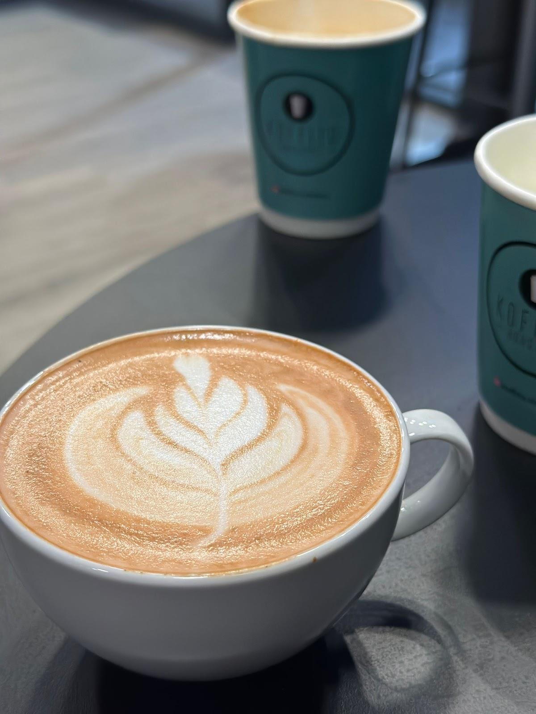

Fincanın
içinden.
Sıcak ve soğuk kahveler; yanında matcha çeşitleri.
İSTANBUL / SEFAKÖY
KAHVEYE AYRILAN ZAMAN.
Bir fincanın etrafında buluşalım.
Kahve, matcha ve tatlı için
yerimiz belli.

KOFFITO’DA BULUŞALIM
Bir kahve için uğrayın.
Sohbete biraz zaman ayırın.
GOOGLE YORUMLARI
“Ortam harika, kahve lezzetli ve personellerin ilgisi üst düzey.”
Barış Dikmen
Google yorumunu aç ↗“Hem çalışanların güleryüzü hem de mekanın ambiyansı çok keyifliydi.”
ayhan karayiğit
Google yorumunu aç ↗Google yorumlarından kısa alıntılar. Puan ve yorum sayısı kontrol tarihindeki kaydı gösterir.
Güncel çalışma saatleri için işletmeyle iletişime geçebilirsiniz.